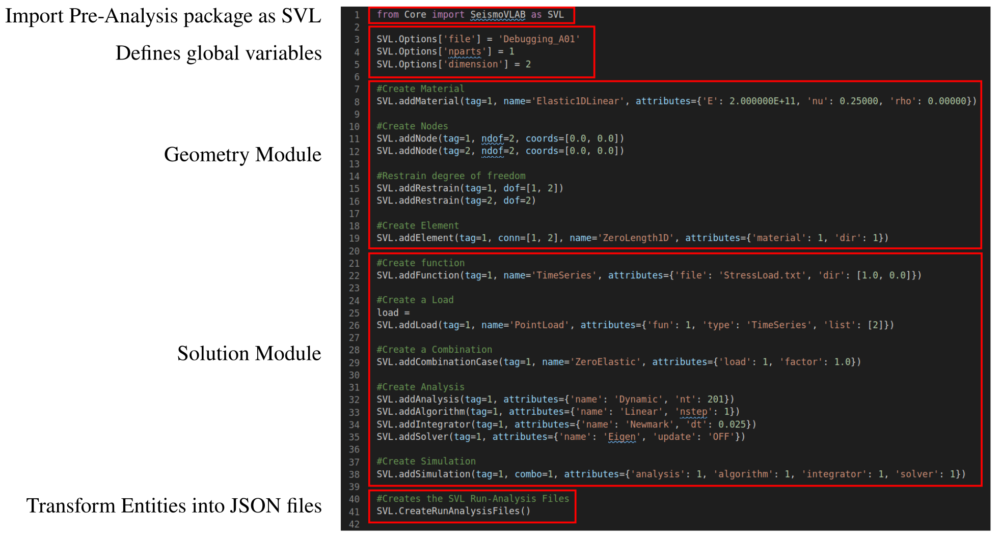
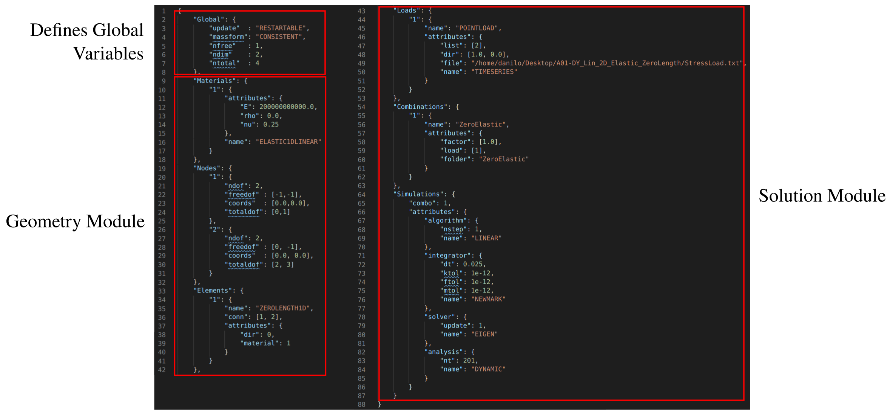

The Pre-Analysis and the Run-Analysis are conceptually divided into three modules:
- Geometry Module : This module is formed by Node, Material, Section, Element, Load, and Mesh. On this level the mesh of the finite element model is generated. Here, nodes are placed in space, elements are defined through node connectivity, materials are assigned to the elements, and loads are specified on nodes and elements, respectively.
- Solution Module : This module is formed by Analysis, Algorithm, Integrator, LinearSystem, and Assembler. On this level an static or dynamical analysis is specified. The analysis will use the algorithm to take care of how the solution will be evolved for each time step. At each time step, the integrator will combine the matrices and vectors, and the solver will find the solution to the linear system.
- Input/Output Module : This module is formed by Recorder and Driver. In this level the Parser reads the input file(s) and generates the Node, Element, Material, Load, Mesh objects to define a finite element problem. It also generates the analysis and how the finite element problem is going to be solved. The Recorders store the solution at Node or Element obtained in the Solution Module in files specified by the user.
The later modules can easily be identified in the Pre-Analysis and the Run-Analysis input files. For example,
- In the Pre-Analysis python script:

- In the Run-Analysis JSON file:

- Attention
- Note how the python script start importing the SVL package in line 1 and ends generating the JSON files for the Run-Analysis in line 41 as discussed in Pre-Analysis.
-
Note the similitude between the inputs in the Pre-Analysis python functions and the Run-Analysis json outptut files.


 1.8.13.
1.8.13.